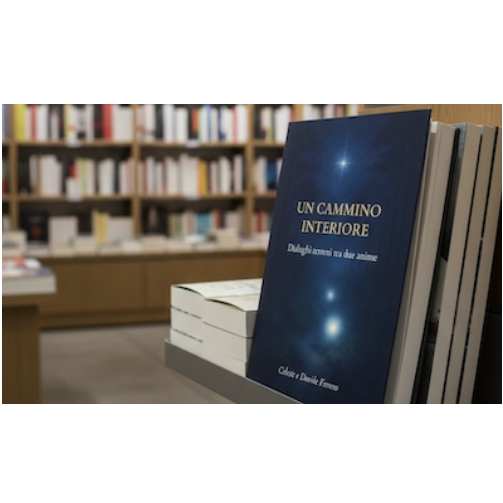

Non è solo un libro. È una conversazione che ti attraversa.
Parole che non spiegano la vita. La toccano.
Questo libro nasce da un incontro. Due anime, due storie, un dialogo autentico.
Pagina dopo pagina, il lettore entra in conversazioni vere. Senza maschere. Senza retorica.
Si parla di dolore, di cadute, di silenzi. Ma soprattutto di luce.
Celeste e Davide condividono il significato profondo di questo cammino
La malattia che ha trasformato la mia vita
Quando la malattia è entrata nella mia vita, tutto è cambiato.
Non era solo una diagnosi medica. Era una sfida all'identità, alla forza, alla speranza.
Ho imparato che il corpo può tremare, ma l'anima può rimanere ferma e forte.
Questo libro nasce da quella trasformazione. Se anche tu stai affrontando una sfida, sappi che non sei solo.

Scrivici per qualsiasi domanda o riflessione
forse è il momento di leggerlo